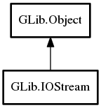

IOStream
Object Hierarchy:
Description:
GIOStream represents an object that has both read and write streams.
Generally the two streams acts as separate input and output streams, but they share some common resources and state. For instance, for seekable streams they may use the same position in both streams.
Examples of IOStream objects are SocketConnection which represents a two-way network connection, and FileIOStream which represent a file handle opened in read-write mode.
To do the actual reading and writing you need to get the substreams with get_input_stream and get_output_stream.
The IOStream object owns the input and the output streams, not the other way around, so keeping the substreams alive will not keep the IOStream object alive. If the IOStream object is freed it will be closed, thus closing the substream, so even if the substreams stay alive they will always just return a g_io_error_closed for all operations.
To close a stream use close which will close the common stream object and also the individual substreams. You can also close the substreams themselves. In most cases this only marks the substream as closed, so further I/O on it fails but common state in the IOStream may still be open. However, some streams may support "half-closed" states where one direction of the stream is actually shut down.
All known sub-classes:

Namespace: GLib
Package: gio-2.0
Content:
Properties:
Creation methods:
Methods:
Inherited Members:
All known members inherited from class GLib.Object